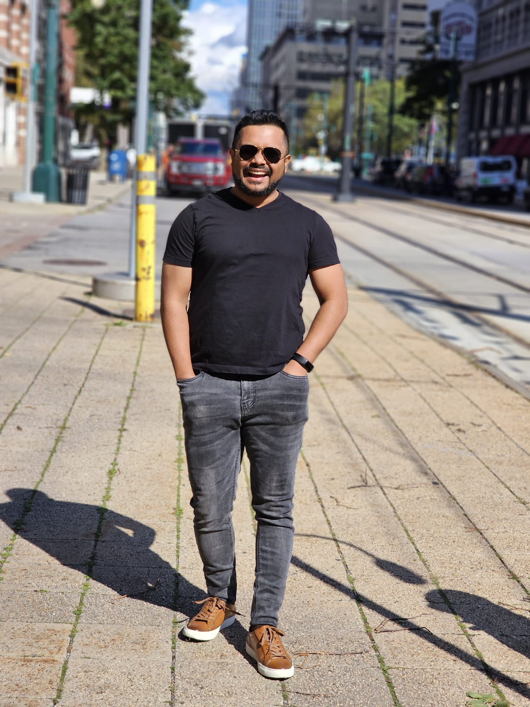

You know how sometimes AI says things that aren't true? In this workshop, I show you how to give AI a notebook full of YOUR stuff, so it only talks about things it actually knows. Like giving your robot a cheat sheet!
Karpathy said build a knowledge base with Obsidian. I took it further with Notion. Five live projects showing students how to make AI that never hallucinates, because it reads YOUR data instead of guessing.
But sometimes your robot friend makes stuff up! You ask "What did I eat for lunch?" and it says "Pizza!" when you actually had a sandwich. That's because the robot is GUESSING instead of KNOWING.
So what if you gave your robot a notebook? A notebook with all YOUR stuff in it. Now when you ask a question, the robot reads YOUR notebook first and gives you the RIGHT answer!
Funny story: One time my robot read a page from my notebook that I already threw away. It told me all about something that didn't exist anymore! That's when I learned: even smart robots need good rules.
Every student has used ChatGPT. Most have seen it hallucinate. Few understand why, and almost none know how to fix it. The fix isn't better prompts. It's giving AI access to YOUR knowledge base so it answers from real data instead of statistical guesses.
Andrej Karpathy recently told developers to build a personal knowledge base and let LLMs read it. He recommended Obsidian with local Markdown files. I took it further with Notion, because my knowledge base needs to work across devices, connect to Claude Code via MCP, and serve as a single source of truth for my entire development workflow.
Fair warning: I've had AI confidently cite a Notion page that I deleted two weeks earlier. It generated a perfect summary of content that no longer existed. That failure taught me more about AI grounding than any tutorial.
Think of Notion like a super organized backpack. Instead of throwing all your papers in randomly, you have folders: one for projects, one for notes, one for cool code tricks. When everything is neat and labeled, your robot friend can find anything in seconds. If it's messy? The robot gets confused and starts guessing.
I open an empty Notion workspace. In 8 minutes, I build a structured knowledge base: a Projects database, a Research Notes section, and a Code Snippets library, all connected with linked relations and tags. AI grounding starts with structure.
Now I plug a cable between the robot and the notebook! I type one tiny instruction and suddenly the robot can READ your notebook. Before this, the robot was just guessing. After this, when you ask "What's my science project about?", it opens your notebook and tells you EXACTLY what you wrote. No guessing!
I edit one JSON file and Claude Code connects directly to my Notion workspace via MCP. Instead of guessing, it searches my Notion database and answers from that page only. Students see AI go from "I think..." to "According to your notes on..." in one configuration change.
Now I give the robot THREE rules. Rule 1: Only talk about stuff in MY notebook. Rule 2: Always tell me WHICH page you read it from. Rule 3: If you don't know, just say "I don't know." Then I make a magic button called "/research" that anyone can press to search the notebook instantly!
I create a CLAUDE.md file with three non-negotiable instructions: only answer from my Notion, always cite the source page URL, and say "I don't have information on that" if the data isn't there. Then I build a reusable Skill called /research that searches Notion and writes summaries with citations.
A really famous computer scientist named Andrej says the most important skill now isn't typing code. It's THINKING. Imagine you're the boss of a team of robots. You don't do the work yourself. You tell each robot what to do, check their work, and make sure nobody messes up. The smarter YOU are, the better your robots work!
I walk through Karpathy's framework: you're not writing code anymore, you're orchestrating agents and acting as oversight. The skill now is judgment, not syntax. Technical mastery is "even more of a multiplier than before."
Now the big finale! I press the magic "/research" button and the robot reads my entire notebook, finds all the pages about a topic, and writes a report with LINKS to where it found everything. Then I ask the SAME question to a robot WITHOUT the notebook. It makes stuff up! I put both answers next to each other. One is honest. One is a liar. Guess which one had the notebook?
If your notebook is empty about something, the robot says "I don't know." That sounds bad, but it's actually GREAT. It means the robot is being honest instead of faking it.
I type /research and Claude searches my Notion, finds 5 relevant pages, and writes a 2-page summary with inline citations. Then I run the same query through regular Claude (without Notion) and put both outputs side by side. Students see hallucinated vs grounded output from the same AI, same question.
If your Notion is incomplete, the AI's answers will be incomplete too. Teaching students that "I don't know" from AI is a feature, not a bug, is one of the hardest lessons.